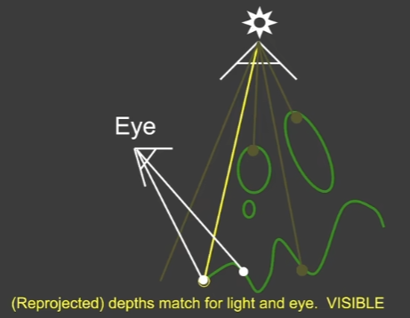
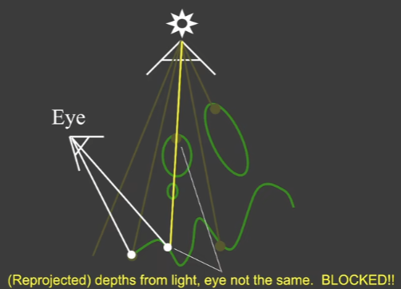
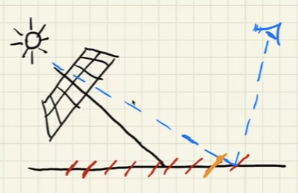
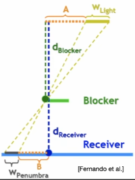
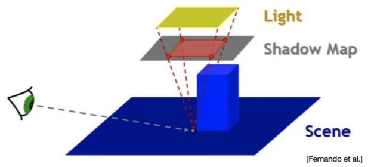
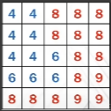
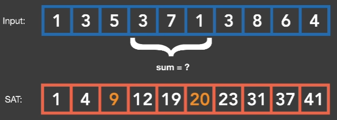
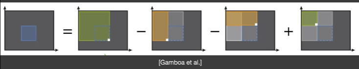
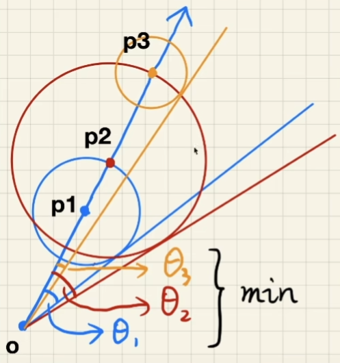

GAMES 202 L03 and L04 - Shadows
Shadow Mapping
Concepts
- A 2-Pass Algorithm
- The light pass generates the SM (output a depth buffer from the light source)
- The camera pass uses the SM (Render a standard image from eye; Project visible points in eye view back to light source view (transform from world space to light view space by matrices); if , the point is under shadow; otherwise not)


- An image-space algorithm
- Pro: no knowledge of scene’s geometry is required
- Con: causing self occlusion and aliasing issues
Issues in Shadow Mapping
- Self-occlusion.
- This is caused by the limitation of shadow maps. See figure below, different points will be mapped to the same grid in the shadow map. In this figure, the orange part on the ground and the part that eye sees on the ground will be mapped to the same grid, which makes it look like the orange part casts shadow on other parts of the ground.
 - This issue is especially serious when the light direction is almost paralleal with the surface and it’s much less serious when the light direction is vertical to the surface.
- Solution
- Adding a (variable) bias to reduce self-occlusion (the bias can be adjusted according to the light direction since the issue’s seriousness is realted to it)
- But introducing detached shadow issue
- Second-depth shadow mapping
- Using the midpoint between first and second depths (最小深度和次小深度的中间值) in SM
- Unfortunately, requires objects to be watertight And the overhead may not worth it, so in practice no one uses it.
- Adding a (variable) bias to reduce self-occlusion (the bias can be adjusted according to the light direction since the issue’s seriousness is realted to it)
- This is caused by the limitation of shadow maps. See figure below, different points will be mapped to the same grid in the shadow map. In this figure, the orange part on the ground and the part that eye sees on the ground will be mapped to the same grid, which makes it look like the orange part casts shadow on other parts of the ground.
- Aliasing
Approximation in RTR
An important “approximately equal” throughout RTR:
Here, we can understand as a normalization (归一化).
This approximation is more accurate especially when
- Support is small (here “support” refers to the integral range 积分范围)
- g(x) is smooth enough (“smooth” does’t refer to “consistency” but means that the difference between the minimum and maximum value of g(x) in the integral range is not very large)
Approximation in shadow mapping
- Recall: the rendering equation with explicit visibility
PS: Here, is 可见性函数 (Visibility Term). if direction is not blocked; otherwise . If we ignore , we’re calculating global diffuse illumination + a scene without shadows. Explicitly writing allows us to model shadows, occlusion, and global illumination attenuation.
- Approximated as
So now when is it accurate?
- Small support (point / directional lighting)
- Smooth integrand (diffuse bsdf / constant radiance area lighting)
Percentage closer soft shadows
Shadow mapping can generate hard shadows, but shadows in the real world have blurred edges, i.e., soft shadows.
- Provides anti-aliasing at shadows’ edges- Not for soft shadows (PCSS is, introducing later)
- Filtering (average) the results of shadow comparisons
- Why not filtering the shadow map?
- Texture filtering just averages color components, i.e., you’ll get blurred shadow map first
- Averaging depth values, then comparing, you still get a binary visibility
Solution ([Reeves, SlGGARPH 87])
Neither filtering the generated aliasing shadow nor filtering the shadow map!
-
Perform multiple (e.g.7x7) depth comparisons for each fragment;
-
Then, averages results of comparisons, e.g., for point P on the floor,
- (1)compare its depth with all pixels in the red box, e.g. 3x3 (in practice this number will be much larger)
- (2) get the compared results, e.g.,
(3) take avg. to get visibility, e.g., 0.667
-
Does filtering size matter?
- Small -> sharper
- Large -> softer
-
Can we use PCF to achieve soft shadow effects?
- Key thoughts
- From hard shadows to soft shadowsWhat’s the correct size to filter?
- Is it uniform?
- Key conclusion
- Filter size <-> blocker distance
- More accurately, relative average projected blocker depth!
- A mathematical “translation”
考虑一个相似三角形PS: umbra:本影，penumbra：半影

- Key thoughts
-
Now the only question: What’s the blocker depth d_Blocker
- The complete algorithm of PCSS
- Step 1: Blocker search: getting the average blocker depth in a certain region
- Step 2: Penumbra estimation(use the average blocker depth to determine filter size)
- Step 3: Percentage Closer Filtering
- Which region to perform blocker search?
- Can be set constant (e.g. 5x5), but can be better with heuristics
- Which region (on the shadow map) to perform blocker search?
- depends on the light size and receiver’s distance from the light
- The figure below shows a heuristics method to set a region for blocker search

- Which step(s) can be slow?
- Looking at every texel inside a region (steps 1 and 3) (Solution: Sparse sampling, i.e., only look at parts of the texels)
- Softer -> larger filtering region -> slower
- The complete algorithm of PCSS
Variance soft shadow mapping (VSSM)
-
Fast blocker search (step 1) and filtering (step 3)[Yang et al.]
Think from “percentage closer” filtering -
We wanna know the percentage of texels that are in front of the shading point, i.e., how many texels are closer than t in the search area.
- However, looking through all texels to check how many texels are closer than t in the search area can take a lot of effort. Do we have easier methods?
- Using a histogram -> accurate answer!
- Using a Normal distribution (need mean and variance to define a normal distribution) -> approximate answer!
- However, looking through all texels to check how many texels are closer than t in the search area can take a lot of effort. Do we have easier methods?
-
Key idea
- Quickly compute the mean and variance of depths in an area
- Mean (average)
- Hardware MIPMAPing
- Summed Area Tables (SAT)
- Variance
- So we just need another shadow map with at every point and get the mean of
-
Back to the problem: Percentage of texels that are closer than the shading point
- We want to calculate the shade’s area
- Accurate answer exists (hint: What’s the Cumulative Distribution Function (CDF) of a Gaussian Probability Density Function (PDF)?)
- It doesn’t have to be too accurate!
- Chebychev’s inequality (one-tailed version, for ) allows us to get P without knowing the exact distribution.
- : mean
- : variance
- It works for all distributions, so it doesn’t even assume Gaussian distribution!
- In graphics we want approximation more than inequality - so in practice we often use it directly as an approximation (although there are multiple constraints).
- Chebychev’s inequality (one-tailed version, for ) allows us to get P without knowing the exact distribution.
- Performance
Shadow map generation: “square depth map”: parallel, along with shadow map, #pixels - Run time
- Mean of depth in a range: O(1)
- Mean of depth square in a range: O(1)
- Chebychev: O(1)
- No samples / loops needed!
- Step 3 (filtering) solved perfectly (?)
-
Back to Step 1: blocker search (within an area)
- Also require sampling (loop) earlier, also inefficient
- The average depth of blockers
- Not the average depth
- The average depth of those texels whose depth
- Key idea - Blocker , avg. (blue part) - Non-blocker , avg. (red part)
- Here,
- Approximation: , Chebychev works here!
- Approximation: - , we really don’t know
- Approximation: (t is the depth of the shading point, i.e., shadow receiver is a plane)
Step 1 solved with negligible additional cost
MIPMAP and Summed-Area Variance Shadow Maps
SAT for range query
- Classic data structure and algorithm (prefix sum)
In 1D:

In 2D:

Note: accurate, but need O(n) time and storage to build
Storage might not be an issue
Can we speed up building SAT?
Moment shadow mapping
- Revisit VSSM
- Issues if the depth distribution is inaccurate
- Overly dark: may be aceeptable
- Overly bright: LIGHT LEAKING!
- Chebychev is to blame?
- Only valid when t > Zavg
- Approximate (t is the depth of the shading point, i.e., shadow receiver is a plane). What if the shadow receiver is not a plane?
- Issues if the depth distribution is inaccurate
Due to the issue of inaccurate description of distributions the goal of Momenet shadow mapping is to represent a distribution more accurately (but still not too costly to store). The key idea is to use higher order moments (矩) to represent a distribution.
- Moments
- Quite a few variations on the definition
- We use the simplest:
- So,VSSM is essentially using the first two orders of moments
- What can moments do?
- Conclusion: first m orders of moments can represent a function with m/2 steps
- Usually, 4 is good enough to approximate the actual CDF of depth dist.
- Moment Shadow Mapping
- Extremely similar to VSSM
- When generating the shadow map, record
- Restore the CDF during blocker search & PCF
- Pro: very nice results
- Cons:
- Costly storage (might be fine);
- Costly performance (in the reconstruction)
Distance Feild Soft Shadows
Concepts and methods
Use SDF to approcximately determine the occlusion percentage.
The value of SDF at a point provides a “safe angle” for the eye. An SDF sphere can tell us in what range (the radius of a spere) there’s no occlussion (think or ray marching with SDF spheres). Smaller “safe angle” indicates less visibility (more shadow).
During ray marching, calculate the “safe angle” from eyes at each step (see the figure below). Keep and update the minimum “safe angle” during ray marching.

However, the problem is how to compute the angle. We know that we expect to avoid calculations of Inverse trigonometric functions (反三角函数) because of their complexity, so we use an approximate way. When the angle theta is small enough, we can think of theta is approximately equivalent to sin(theta). To avoid the use of arcsin, instead of:
arcsin \left( \frac{\text{SDF}(p)}{p-o} \right) \cdot $$, we'd like to use: $$min \left\{ \frac{k \cdot \text{SDF}(p)}{p-o}, 1.0 \right\}$$. Here, larger k means even though the first part is small we'll get 1 as our result, which means earlier cutoff of penumbra, i.e., harder shadow. That is to say, k controls how soft/hard the shadow is. ## Pros and Cons - Pros - Fast (ignoring the time spent generating SDF) - High quality - Cons - Need precomputation - Need heavy storage - Artifact?